We bring sensory strategy to life
Scent & Brand
Make scent part of the brand.
Scent shapes atmosphere, emotion and memory, turning spaces into recognisable experiences.
We help brands use scent with intention, so a space does more than look right. It feels right, too.
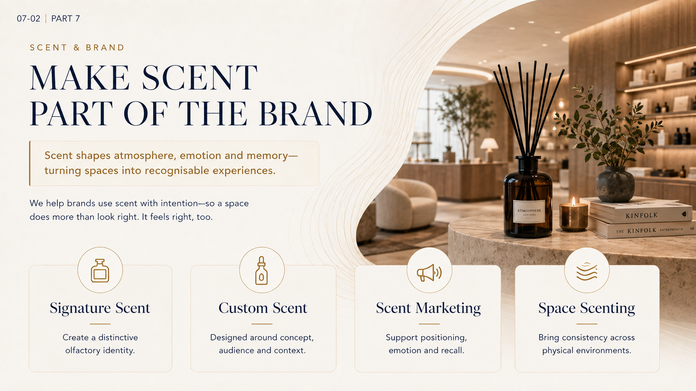
-
Signature Scent
Create a distinctive olfactory identity.
-
Custom Scent
Designed around concept, audience and context.
-
Scent Marketing
Support positioning, emotion and recall.
-
Space Scenting
Bring consistency across physical environments.
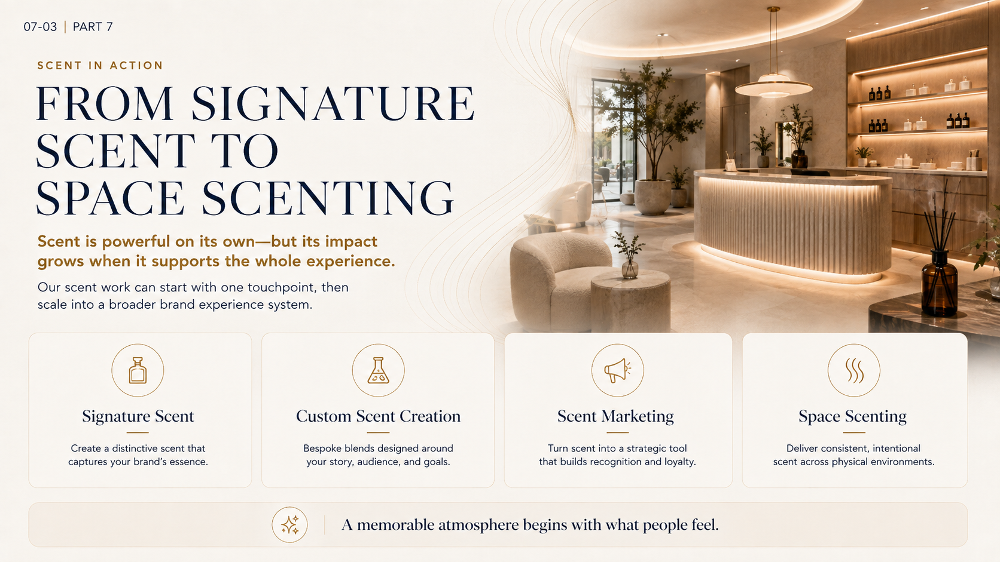
Scent in Action
From signature scent to space scenting.
Scent is powerful on its own, but its impact grows when it supports the whole experience.
Our scent work can start with one touchpoint, then scale into a broader brand experience system.
-
Signature Scent
Create a distinctive scent that captures your brand's essence.
-
Custom Scent Creation
Bespoke blends designed around your story, audience, and goals.
-
Scent Marketing
Turn scent into a strategic tool that builds recognition and loyalty.
-
Space Scenting
Deliver consistent, intentional scent across physical environments.
A memorable atmosphere begins with what people feel.
Product Sensory
Design products people can feel.
We shape how products are perceived through flavor, texture, cooling, mouthfeel and overall sensory impression.
From food and beverage to personal and oral care, sensory design helps products become more intuitive, enjoyable and memorable.
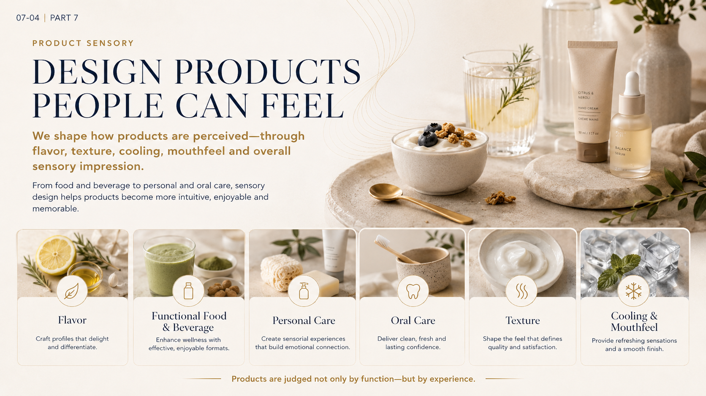
-
Flavor
Craft profiles that delight and differentiate.
-
Functional Food & Beverage
Enhance wellness with effective, enjoyable formats.
-
Personal Care
Create sensorial experiences that build emotional connection.
-
Oral Care
Deliver clean, fresh and lasting confidence.
-
Texture
Shape the feel that defines quality and satisfaction.
-
Cooling & Mouthfeel
Provide refreshing sensations and a smooth finish.
Products are judged not only by function, but by experience.
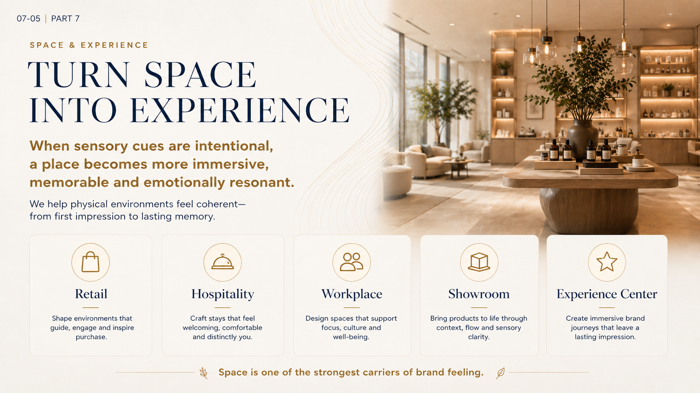
Space & Experience
Turn space into experience.
When sensory cues are intentional, a place becomes more immersive, memorable and emotionally resonant.
We help physical environments feel coherent, from first impression to lasting memory.
-
Retail
Shape environments that guide, engage and inspire purchase.
-
Hospitality
Craft stays that feel welcoming, comfortable and distinctly you.
-
Workplace
Design spaces that support focus, culture and well-being.
-
Showroom
Bring products to life through context, flow and sensory clarity.
-
Experience Center
Create immersive brand journeys that leave a lasting impression.
Space is one of the strongest carriers of brand feeling.
Brand Touchpoints
Connect every touchpoint.
The brand feels stronger when packaging, unboxing, campaigns and journey moments tell the same sensory story.
We connect sensory cues across physical and digital touchpoints so the experience stays coherent.
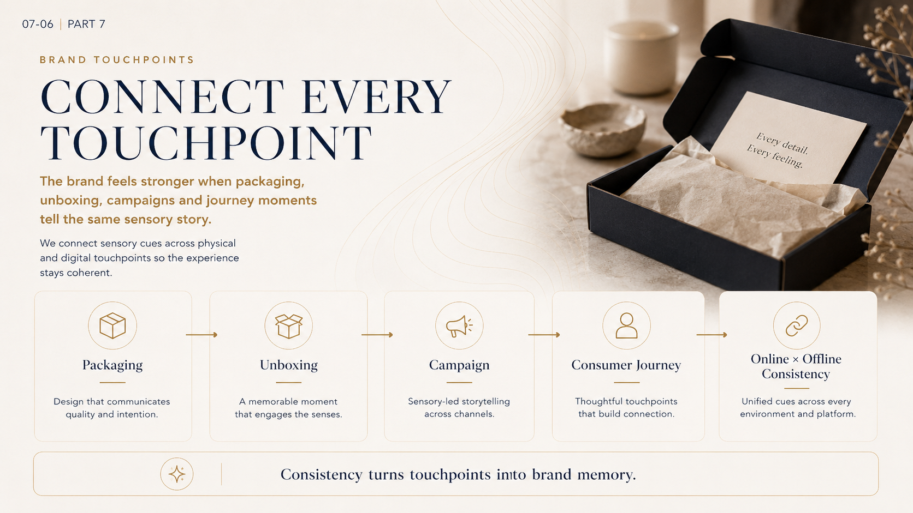
-
Packaging
Design that communicates quality and intention.
-
Unboxing
A memorable moment that engages the senses.
-
Campaign
Sensory-led storytelling across channels.
-
Consumer Journey
Thoughtful touchpoints that build connection.
-
Online × Offline Consistency
Unified cues across every environment and platform.
Consistency turns touchpoints into brand memory.
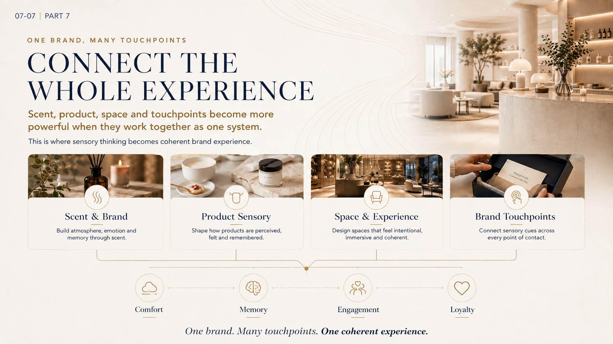
One Brand, Many Touchpoints
Connect the whole experience.
Scent, product, space and touchpoints become more powerful when they work together as one system.
This is where sensory thinking becomes coherent brand experience.
-
Scent & Brand
Build atmosphere, emotion and memory through scent.
-
Product Sensory
Shape how products are perceived, felt and remembered.
-
Space & Experience
Design spaces that feel intentional, immersive and coherent.
-
Brand Touchpoints
Connect sensory cues across every point of contact.
- Comfort
- Memory
- Engagement
- Loyalty
One brand. Many touchpoints. One coherent experience.
Bringing It to Life
We help brands become something people can feel, remember and choose.
From scent to product, from space to touchpoints, we turn sensory ideas into real-world brand experience.
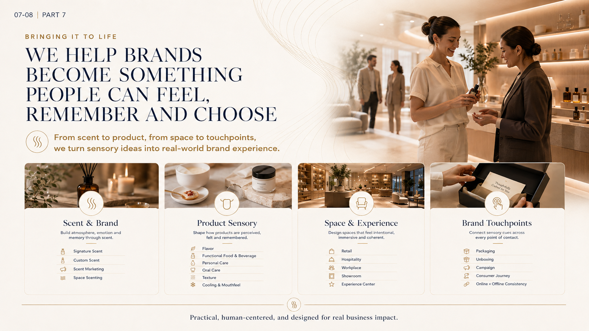
-
Scent & Brand
Build atmosphere, emotion and memory through scent.
- Signature Scent
- Custom Scent
- Scent Marketing
- Space Scenting
-
Product Sensory
Shape how products are perceived, felt and remembered.
- Flavor
- Functional Food & Beverage
- Personal Care
- Oral Care
- Texture
- Cooling & Mouthfeel
-
Space & Experience
Design spaces that feel intentional, immersive and coherent.
- Retail
- Hospitality
- Workplace
- Showroom
- Experience Center
-
Brand Touchpoints
Connect sensory cues across every point of contact.
- Packaging
- Unboxing
- Campaign
- Consumer Journey
- Online × Offline Consistency
Practical, human-centered, and designed for real business impact.
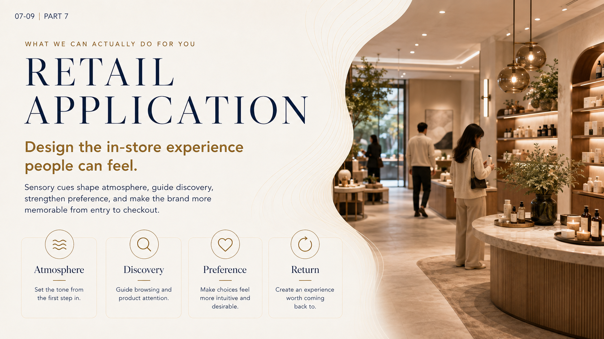
What We Can Actually Do for You
Retail application.
Design the in-store experience people can feel.
Sensory cues shape atmosphere, guide discovery, strengthen preference, and make the brand more memorable from entry to checkout.
-
Atmosphere
Set the tone from the first step in.
-
Discovery
Guide browsing and product attention.
-
Preference
Make choices feel more intuitive and desirable.
-
Return
Create an experience worth coming back to.
What We Can Actually Do for You
Hospitality application.
Turn every stay into a more welcoming and memorable experience.
From arrival to departure, sensory design creates comfort, trust, emotional warmth, and stronger guest memory across the hospitality journey.
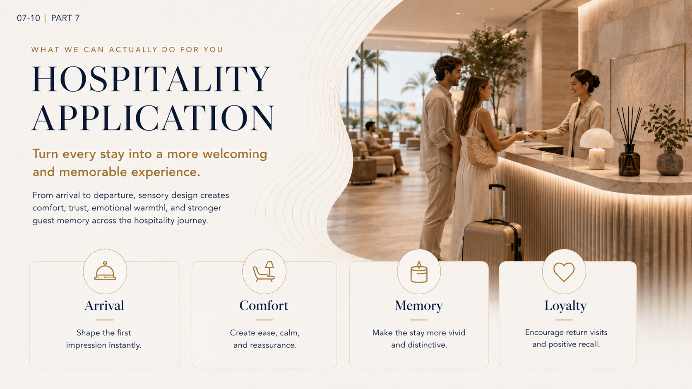
-
Arrival
Shape the first impression instantly.
-
Comfort
Create ease, calm, and reassurance.
-
Memory
Make the stay more vivid and distinctive.
-
Loyalty
Encourage return visits and positive recall.
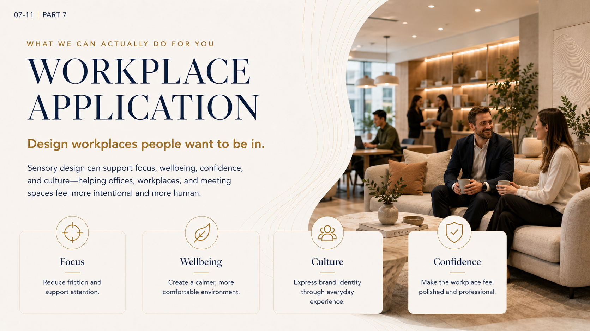
What We Can Actually Do for You
Workplace application.
Design workplaces people want to be in.
Sensory design can support focus, wellbeing, confidence, and culture, helping offices, workplaces, and meeting spaces feel more intentional and more human.
-
Focus
Reduce friction and support attention.
-
Wellbeing
Create a calmer, more comfortable environment.
-
Culture
Express brand identity through everyday experience.
-
Confidence
Make the workplace feel polished and professional.
What We Can Actually Do for You
Showroom & experience center.
Turn product display into immersive brand experience.
When visual, spatial, material, and sensory cues work together, showrooms become more than displays. They become places of discovery, storytelling, and recall.
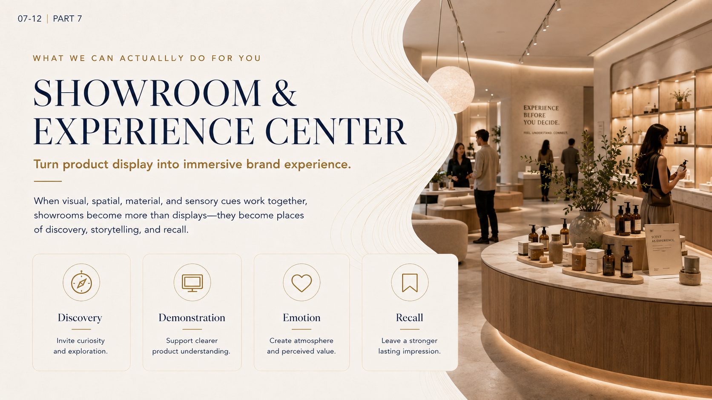
-
Discovery
Invite curiosity and exploration.
-
Demonstration
Support clearer product understanding.
-
Emotion
Create atmosphere and perceived value.
-
Recall
Leave a stronger lasting impression.
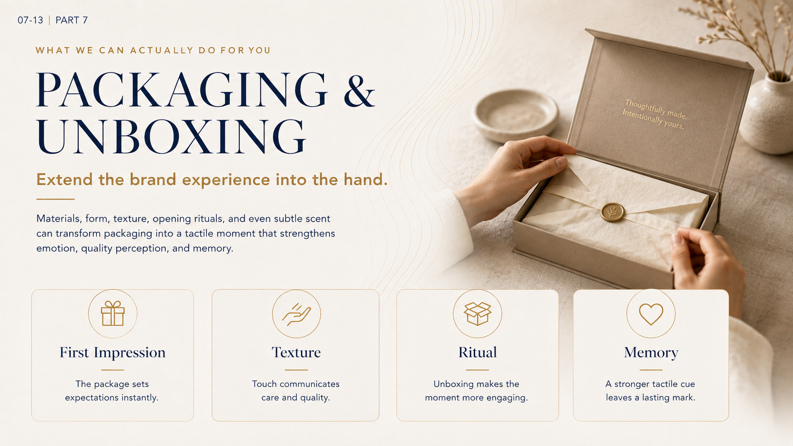
What We Can Actually Do for You
Packaging & unboxing.
Extend the brand experience into the hand.
Materials, form, texture, opening rituals, and even subtle scent can transform packaging into a tactile moment that strengthens emotion, quality perception, and memory.
-
First Impression
The package sets expectations instantly.
-
Texture
Touch communicates care and quality.
-
Ritual
Unboxing makes the moment more engaging.
-
Memory
A stronger tactile cue leaves a lasting mark.
What We Can Actually Do for You
Consumer journey touchpoints.
One journey. Many moments. One brand experience.
People experience brands across a sequence of moments, not just in one place. Sensory design helps each touchpoint feel connected, intentional, and coherent.
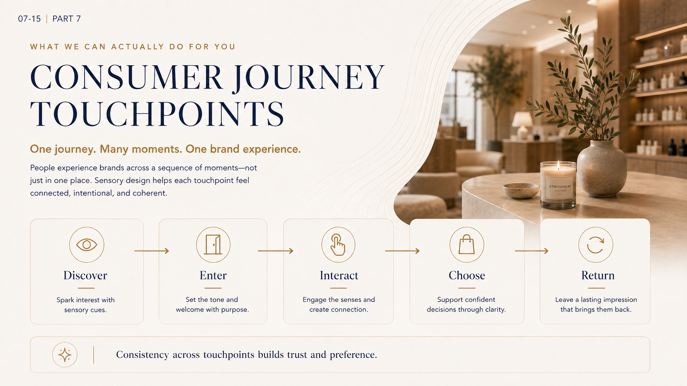
-
Discover
Spark interest with sensory cues.
-
Enter
Set the tone and welcome with purpose.
-
Interact
Engage the senses and create connection.
-
Choose
Support confident decisions through clarity.
-
Return
Leave a lasting impression that brings them back.
Consistency across touchpoints builds trust and preference.
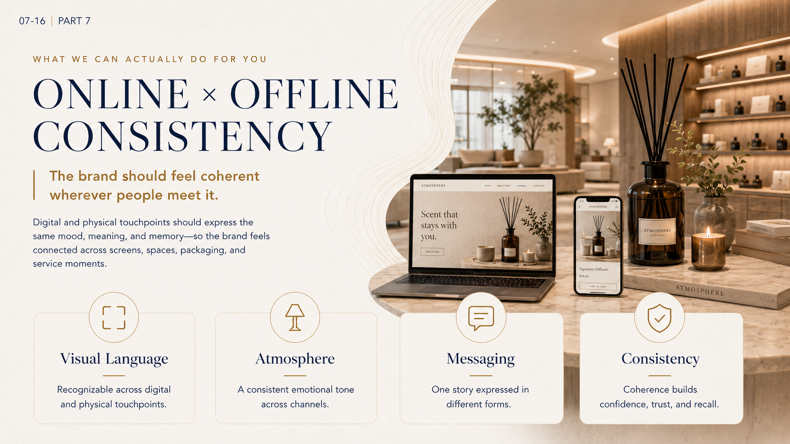
What We Can Actually Do for You
Online × offline consistency.
The brand should feel coherent wherever people meet it.
Digital and physical touchpoints should express the same mood, meaning, and memory, so the brand feels connected across screens, spaces, packaging, and service moments.
-
Visual Language
Recognizable across digital and physical touchpoints.
-
Atmosphere
A consistent emotional tone across channels.
-
Messaging
One story expressed in different forms.
-
Consistency
Coherence builds confidence, trust, and recall.